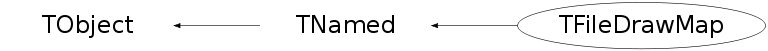

class TFileDrawMap: public TNamed
TFileDrawMap This class is automatically called by TFile::DrawMap It draws a canvas showing the internal structure of a ROOT file. Each key or basket in a file is shown with a fill area drawn at the byte position of the key/basket in the file. The Y axis of the canvas shows the number of Kbytes/Mbytes. The X axis shows the bytes between y(i) and y(i+1). A color corresponding to the class in the key/basket is automatically selected using the class unique identifier. When moving the mouse in the canvas, the "Event Status" panels shows the object corresponding to the mouse position. if the object is a key, it shows the class and object name as well as the file directory name if the file has sub-directories. if the object is a basket, it shows: -the name of the Tree -the name of the branch -the basket number -the entry number in the basket Special keys like the StreamerInfo record, the Keys List Record and the Free Blocks Record are also shown. When clicking the right mouse button, a pop-up menu is shown with its title identifying the picked object and with the items: -DrawObject: in case of a key, the Draw function of the object is called in case of a basket, the branch is drawn for all entries -DumpObject: in case of a key, the Dump function of the object is called in case of a basket, tree->Show(entry) is called -InspectObject: the Inspect function is called for the object. The normal axis zoom functionality can be used to zoom or unzoom One can also use the TCanvas context menu SetCanvasSize to make a larger canvas and use the canvas scroll bars. When the class is built, it is possible to identify a subset of the objects to be shown. For example, to view only the keys with names starting with "abc", set the argument keys to "abc*". The default is to view all the objects. The argument options can also be used (only one option currently) When the option "same" is given, the new picture is suprimposed. The option "same" is useful, eg: to draw all keys with names = "abc" in a first pass then all keys with names = "uv*" in a second pass, etc./*
 */
*/
Function Members (Methods)
public:
| TFileDrawMap() | |
| TFileDrawMap(const TFileDrawMap&) | |
| TFileDrawMap(const TFile* file, const char* keys, Option_t* option) | |
| virtual | ~TFileDrawMap() |
| void | TObject::AbstractMethod(const char* method) const |
| virtual void | AnimateTree(const char* branches = "")MENU |
| virtual void | TObject::AppendPad(Option_t* option = "") |
| virtual void | TObject::Browse(TBrowser* b) |
| static TClass* | Class() |
| virtual const char* | TObject::ClassName() const |
| virtual void | TNamed::Clear(Option_t* option = "") |
| virtual TObject* | TNamed::Clone(const char* newname = "") const |
| virtual Int_t | TNamed::Compare(const TObject* obj) const |
| virtual void | TNamed::Copy(TObject& named) const |
| virtual void | TObject::Delete(Option_t* option = "")MENU |
| virtual Int_t | DistancetoPrimitive(Int_t px, Int_t py) |
| virtual void | TObject::Draw(Option_t* option = "") |
| virtual void | TObject::DrawClass() constMENU |
| virtual TObject* | TObject::DrawClone(Option_t* option = "") constMENU |
| virtual void | DrawObject()MENU |
| virtual void | TObject::Dump() constMENU |
| virtual void | DumpObject()MENU |
| virtual void | TObject::Error(const char* method, const char* msgfmt) const |
| virtual void | TObject::Execute(const char* method, const char* params, Int_t* error = 0) |
| virtual void | TObject::Execute(TMethod* method, TObjArray* params, Int_t* error = 0) |
| virtual void | ExecuteEvent(Int_t event, Int_t px, Int_t py) |
| virtual void | TObject::Fatal(const char* method, const char* msgfmt) const |
| virtual void | TNamed::FillBuffer(char*& buffer) |
| virtual TObject* | TObject::FindObject(const char* name) const |
| virtual TObject* | TObject::FindObject(const TObject* obj) const |
| virtual Option_t* | TObject::GetDrawOption() const |
| static Long_t | TObject::GetDtorOnly() |
| virtual const char* | TObject::GetIconName() const |
| virtual const char* | TNamed::GetName() const |
| virtual char* | GetObjectInfo(Int_t px, Int_t py) const |
| static Bool_t | TObject::GetObjectStat() |
| virtual Option_t* | TObject::GetOption() const |
| virtual const char* | TNamed::GetTitle() const |
| virtual UInt_t | TObject::GetUniqueID() const |
| virtual Bool_t | TObject::HandleTimer(TTimer* timer) |
| virtual ULong_t | TNamed::Hash() const |
| virtual void | TObject::Info(const char* method, const char* msgfmt) const |
| virtual Bool_t | TObject::InheritsFrom(const char* classname) const |
| virtual Bool_t | TObject::InheritsFrom(const TClass* cl) const |
| virtual void | TObject::Inspect() constMENU |
| virtual void | InspectObject()MENU |
| void | TObject::InvertBit(UInt_t f) |
| virtual TClass* | IsA() const |
| virtual Bool_t | TObject::IsEqual(const TObject* obj) const |
| virtual Bool_t | TObject::IsFolder() const |
| Bool_t | TObject::IsOnHeap() const |
| virtual Bool_t | TNamed::IsSortable() const |
| Bool_t | TObject::IsZombie() const |
| virtual void | TNamed::ls(Option_t* option = "") const |
| void | TObject::MayNotUse(const char* method) const |
| virtual Bool_t | TObject::Notify() |
| void | TObject::Obsolete(const char* method, const char* asOfVers, const char* removedFromVers) const |
| static void | TObject::operator delete(void* ptr) |
| static void | TObject::operator delete(void* ptr, void* vp) |
| static void | TObject::operator delete[](void* ptr) |
| static void | TObject::operator delete[](void* ptr, void* vp) |
| void* | TObject::operator new(size_t sz) |
| void* | TObject::operator new(size_t sz, void* vp) |
| void* | TObject::operator new[](size_t sz) |
| void* | TObject::operator new[](size_t sz, void* vp) |
| TFileDrawMap& | operator=(const TFileDrawMap&) |
| virtual void | Paint(Option_t* option) |
| virtual void | TObject::Pop() |
| virtual void | TNamed::Print(Option_t* option = "") const |
| virtual Int_t | TObject::Read(const char* name) |
| virtual void | TObject::RecursiveRemove(TObject* obj) |
| void | TObject::ResetBit(UInt_t f) |
| virtual void | TObject::SaveAs(const char* filename = "", Option_t* option = "") constMENU |
| virtual void | TObject::SavePrimitive(ostream& out, Option_t* option = "") |
| void | TObject::SetBit(UInt_t f) |
| void | TObject::SetBit(UInt_t f, Bool_t set) |
| virtual void | TObject::SetDrawOption(Option_t* option = "")MENU |
| static void | TObject::SetDtorOnly(void* obj) |
| virtual void | TNamed::SetName(const char* name)MENU |
| virtual void | TNamed::SetNameTitle(const char* name, const char* title) |
| static void | TObject::SetObjectStat(Bool_t stat) |
| virtual void | TNamed::SetTitle(const char* title = "")MENU |
| virtual void | TObject::SetUniqueID(UInt_t uid) |
| virtual void | ShowMembers(TMemberInspector& insp) |
| virtual Int_t | TNamed::Sizeof() const |
| virtual void | Streamer(TBuffer& b) |
| void | StreamerNVirtual(TBuffer& b) |
| virtual void | TObject::SysError(const char* method, const char* msgfmt) const |
| Bool_t | TObject::TestBit(UInt_t f) const |
| Int_t | TObject::TestBits(UInt_t f) const |
| virtual void | TObject::UseCurrentStyle() |
| virtual void | TObject::Warning(const char* method, const char* msgfmt) const |
| virtual Int_t | TObject::Write(const char* name = 0, Int_t option = 0, Int_t bufsize = 0) |
| virtual Int_t | TObject::Write(const char* name = 0, Int_t option = 0, Int_t bufsize = 0) const |
protected:
| virtual void | TObject::DoError(int level, const char* location, const char* fmt, va_list va) const |
| virtual void | DrawMarker(Int_t marker, Long64_t eseek) |
| virtual TObject* | GetObject() |
| virtual Bool_t | GetObjectInfoDir(TDirectory* dir, Int_t px, Int_t py, TString& info) const |
| void | TObject::MakeZombie() |
| virtual void | PaintBox(TBox& box, Long64_t bseek, Int_t nbytes) |
| virtual void | PaintDir(TDirectory* dir, const char* keys) |
Data Members
public:
| enum TObject::EStatusBits { | kCanDelete | |
| kMustCleanup | ||
| kObjInCanvas | ||
| kIsReferenced | ||
| kHasUUID | ||
| kCannotPick | ||
| kNoContextMenu | ||
| kInvalidObject | ||
| }; | ||
| enum TObject::[unnamed] { | kIsOnHeap | |
| kNotDeleted | ||
| kZombie | ||
| kBitMask | ||
| kSingleKey | ||
| kOverwrite | ||
| kWriteDelete | ||
| }; |
protected:
| TFile* | fFile | pointer to the file |
| TH1* | fFrame | histogram used to draw the map frame |
| TString | fKeys | list of keys |
| TString | TNamed::fName | object identifier |
| TString | fOption | drawing options |
| TString | TNamed::fTitle | object title |
| Int_t | fXsize | size in bytes of X axis |
| Int_t | fYsize | size in K/Mbytes of Y axis |
Class Charts
{kind=link}
{kind=link}
{kind=link}
{kind=link}

Function documentation
TFileDrawMap(const TFile* file, const char* keys, Option_t* option)
TFileDrawMap normal constructor see descriptions of arguments above
void AnimateTree(const char* branches = "")
Show sequence of baskets reads for the list of baskets involved in the list of branches (separated by ",") if branches="", the branch pointed by the mouse is taken. if branches="*", all branches are taken Example: AnimateTree("x,y,u");
Int_t DistancetoPrimitive(Int_t px, Int_t py)
Compute distance from point px,py to this TreeFileMap Find the closest object to the mouse, save its path in the TFileDrawMap name.
char * GetObjectInfo(Int_t px, Int_t py) const
Redefines TObject::GetObjectInfo. Displays the keys info in the file corresponding to cursor position px,py in the canvas status bar info panel
Bool_t GetObjectInfoDir(TDirectory* dir, Int_t px, Int_t py, TString& info) const
Redefines TObject::GetObjectInfo. Displays the keys info in the directory corresponding to cursor position px,py
void PaintBox(TBox& box, Long64_t bseek, Int_t nbytes)
Paint the object at bseek with nbytes using the box object